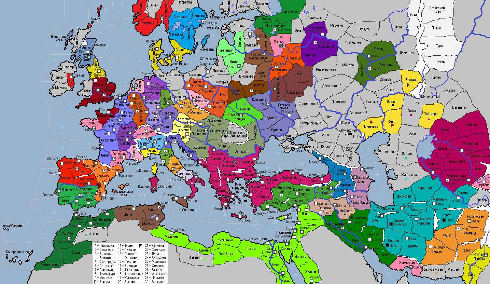

<== | 1 | | 2 | | 3 | | 4 | | 5 | | 6 | | 7 | | 8 | | 9 | | 10 | | 11 | | 12 | ==>
Наследие ибн Сины
Ибн Сина, известный на Западе как Авиценна, был персидским учёным, философом и врачом, жившим в конце X - начале XI века. Авиценна был визирем при правителях Исфахана. Авиценна, благодаря своим трудам 'Книга исцеления' и 'Канон медицины', считается одним из основоположников современной медицины. [+2 н/о в ход стране, владеющей г.Исфахан]
· Венгры захватывают г.Коложвар и устанавливают полный контроль над Трансильванией. · Кастилия, Арагон и гос-во Альморавидов смогли достигнуть соглашения и прекратить ранее начатую войну. · Суздальские Рюриковичи решили обогатиться за счет родственников из Смоленска и в 1035 г. начали войну. Армия суздальцев разбивает армию смолян в Залесье. · Буидский султан Ильяс I умирает в полном расцвете лет. Трон принимает малолетний Кая. Буиды не смогли сломить сопротивления защитников Хормозгана. Азербайджанские шииты откалываются от страны и примыкают к Ширвану. · Регентский совет при Брячиславе I принимает власть в Туровском княжестве. · Ярл Роберт I Отвиль решает силой оружия забрать земли, которые по титулу должны принадлежать ему и вторгается во владения византийцев в Южной Италии. Без боя захвачена область Апулия, разгромлены рабы в г.Бари. · Великий князь Владислав I Киевский совершает удачный поход в причерноморские земли диких печенегов. · Султан Сельджуков Тугрул I умирает, завещав трон среднему сыну Бюленту I Грозные очи. Огузская знать в знак протеста поднимает мятеж и захватывает столицу. Бюлент I присоединяет захваченный Табаристан. Желая найти общий язык с шиитами страны, султан принимает решение отказаться от суннизма. Однако, совет кадиев пригрозил самосожжением, что заставило султана отказаться от этой идеи. Вместе с тем, Бюлент I решается выступить в поддержку восставших в Азербайджане шиитов и объявляет войну государству Буидов. Население г.Шираз поднимает восстание! Сельджуки захватывают Хузестан, а затем выигрывают сражение у буидской армии в Фарсе, загнав её в горную ловушку и полностью уничтожив. · Папа Иоанн V издает буллу «О страшном суде». За богохульные речи и подбивание католиков к неповиновению Папской воле, анафеме подвергается Франция. · В Руме подавлен мятеж каппадокийских рабов. · Из Венеции изгоняются евреи. Войска норманнов пресекли высадку венецианцев в Апулии. · Поляки разбивают мятежников в Галиции и вновь восстанавливают свой контроль над этой провинций. · Войска Мосула проигрывают сражение рабам в Найнаве. · В 1035 году скончался ломбардский герцог Пандольфо I. Фалько I продолжил дело отца. В этом же году случилась какая-то мутная история, связанная с исчезновением сестры нового герцога, в чем обвинили евреев Милана и причиной их изгнания. · Рудольф I – новый граф Швица. · Полоцкое княжество включило в свой состав покоренные псковские земли. · Фатимиды подавляют выступления рабов в г.Каир и на о.Кипр. · Черниговцы решили успеть ухватить свою часть смоленских земель, поэтому нанесли удар по Смоленщине и разбили войска соседа. · Флот норвержцев одерживает победу над кордовским флотом у берегов провинции Бежа. · Добрыня Зосимов утвержден вечем как новый посадник Новгорода. Прежний посадник бежит в Тверь, но новгородцы захватывают столицу вражеского княжества и предают смерти предателя. · Шейх Кордовы Сулейман II умирает, завещая страну сыну Ибрахиму. · Омар Благословенный стал новым правителем государства Зиридов. · Нелояльные власти архиепископу бароны Вестфалии поднимают мятеж, грозившийся перерасти в гражданскую войну, но мятежники были разбиты. Теодор I провел по этому поводу общегосударственный праздник. Стремясь прийти на помощь союзной Саксонии, вестфальцы наносят удар по варварам в Тюрингии, но попадают в засаду, еле успев унести ноги. · Манфреди Габьяти – новый дож Генуэзской республики. · Шведы грабят побережье Ижоры. Шведский король Кнут I Большая голова нападает на варваров провинции Норрланд и погибает в сражении…. · Газневидский малик Махмуд I умирает… Ему наследует сын Наджиб I. Шиитским правителем принимается догмат мазхаб. · Против нелюбимого в народе императора Фотия восстают военные, подняв мятеж в провинции Фракия! · Саксонцы изгоняют славян из Тюрингии. · Датчане совершают набег на альморавидское побережье. · Мормэр II из клана МакКенна – новый герцог Шотландии. · На провинцию Увалы совершен набег диких кочевников. · Основан новый город: Инсбрук (Бавария)